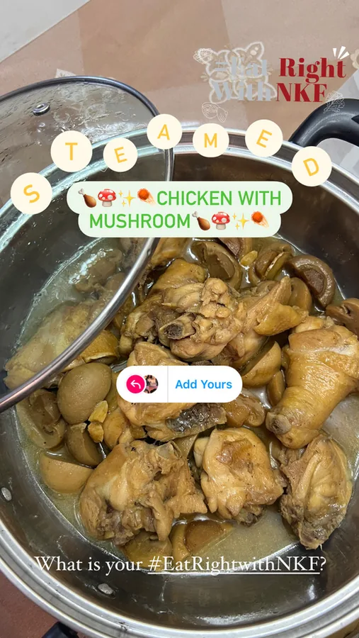

06 / 07 · school module
National Kidney Foundation
A campaign project for the National Kidney Foundation — social collaterals and an EDM that make kidney health easier to talk about.
- role
- Social media collateral designer
- module
- Digital Marketing, Ngee Ann Polytechnic
- brief
- National Kidney Foundation (school project)
- deliverables
- Carousel, IG stories, hashtag campaign, EDM



overview
For our Digital Marketing module, we ran a campaign project for the National Kidney Foundation. I was responsible for social media collaterals — This or That, Q&A and an EDM.
- A This or That Instagram carousel encouraging people to make kidney-friendly food choices.
- Instagram Q&A stories, plus the #AskNKF hashtag campaign idea.
- An EDM sharing facts about the kidneys.
this or that? pick the kidney-friendly choice, then swipe for the answer.
instagram carousel
This or that?
A swipeable carousel that nudges followers toward kidney-friendly choices — fresh berries over high-sugar desserts.
instagram stories
#AskNKF
Q&A stickers invite followers to put their kidney questions to experts — rolled into a hashtag campaign idea.
email newsletter
Kidney facts, delivered
An EDM on facts about the kidneys — playful illustrations, clear calls to action and ways to help.